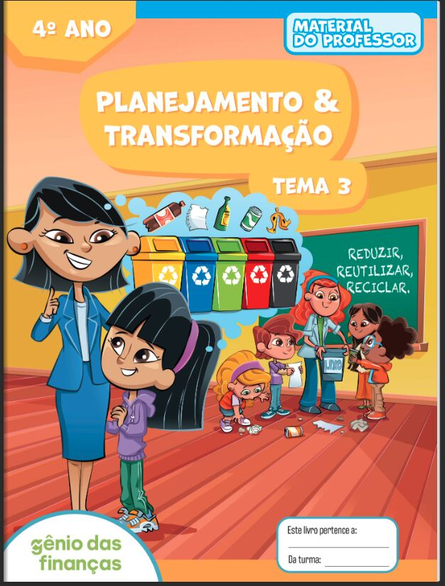

About
Research
Candidate Behavior in Local Elections: Campaigning in the Digital Age
Working Paper
Presentations
Microeconomics Workshop (Insper, São Paulo) · Seminários de Alunos (Insper, São Paulo) · Political Economy WIP (Università Cattolica del Sacro Cuore, Milano) · 9th Doctoral Workshop on the Economics of Digitization (Telecom Paris, Paris) · CESifo Workshop: Digital Platforms — Methods, Policy and Politics (University of Warwick, Birmingham) · 2026 AMA Summer Academic Conference (Denver, Colorado)
Teaching
Graduate
Econometrics II(PhD) — Teaching Assistant
Insper, 2024
Undergraduate
Microeconomics I— Teaching Assistant
Insper, 2025
Competitive and Corporate Strategy— Teaching Assistant
Insper, 2025
Microeconomics II— Teaching Assistant
Insper, 2024
Strategy Economics— Teaching Assistant
FEA-USP, 2019
Other
Social Impact Measurement— Teaching Assistant (Exec. Ed.)
Insper, 2024
Econometrics— Teaching Assistant (Trainee)
Folha de S.Paulo, 2024
Mathematics— Teacher, Middle School
Prefeitura de Caruaru/PE, 2021–2023
Books
Co-authored
Planejamento e Transformação: 4º Ano
Gênio das Finanças – Arco Educação, 2023

1 / 5